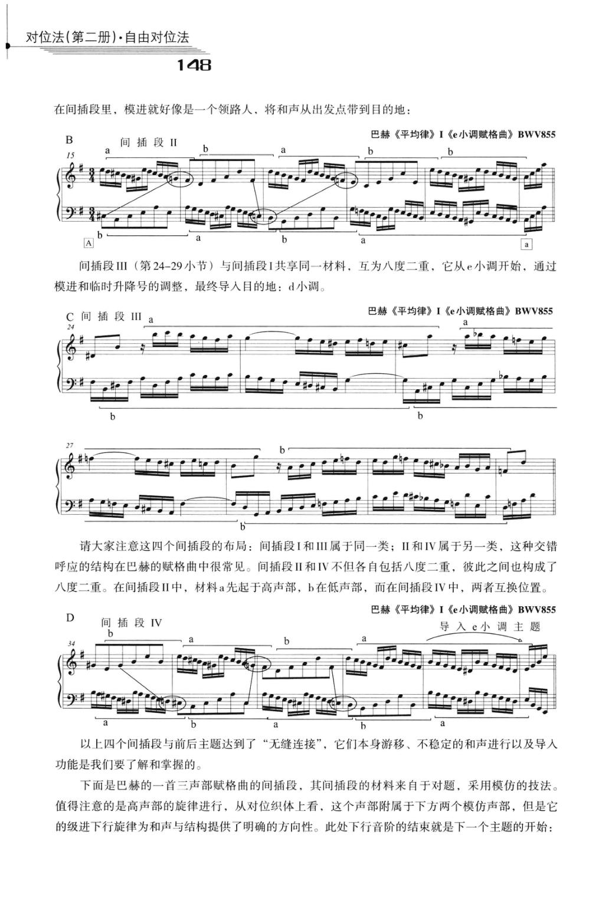

PDF 第 158 页 · 印刷页约 148
第二十课 展开与再现、间插段
对位法（第二册）·自由对位法
148
在间插段里，模进就好像是一个领路人，将和声从出发点带到目的地：
巴赫《平均律》I《e小调赋格曲》BWV855
B
间插段
间插段III（第24-29小节）与间插段I共享同一材料，互为八度二重，它从e小调开始，通过
模进和临时升降号的调整，最终导人目的地：d小调。
巴赫《平均律》I《e小调赋格曲》BWV855
间插段
请大家注意这四个间插段的布局：间插段I和IⅢI属于同一类；ⅡI和IV属于另一类，这种交错
呼应的结构在巴赫的赋格曲中很常见。间插段ⅡI和IV不但各自包括八度二重，彼此之间也构成了
八度二重。在间插段ⅡI中，材料a先起于高声部，b在低声部，而在间插段IV中，两者互换位置。
巴赫《平均律》I《e小调赋格曲》BWV855
D
间插段IV
导入e小调主题
以上四个间插段与前后主题达到了“无缝连接”，它们本身游移、不稳定的和声进行以及导人
功能是我们要了解和掌握的。
下面是巴赫的一首三声部赋格曲的间插段，其间插段的材料来自于对题，采用模仿的技法。
值得注意的是高声部的旋律进行，从对位织体上看，这个声部附属于下方两个模仿声部，但是它
的级进下行旋律为和声与结构提供了明确的方向性。此处下行音阶的结束就是下一个主题的开始：
- 间插段的核心功能是转调与动力
间插段可以短暂离调，也可以完成到新调的过渡；它的材料通常来自主题或对题，但处理更流动、更模进化。
“间插段……本身游移、不稳定的和声进行以及导入功能是我们要了解和掌握的。”